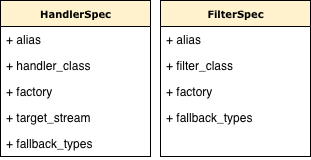
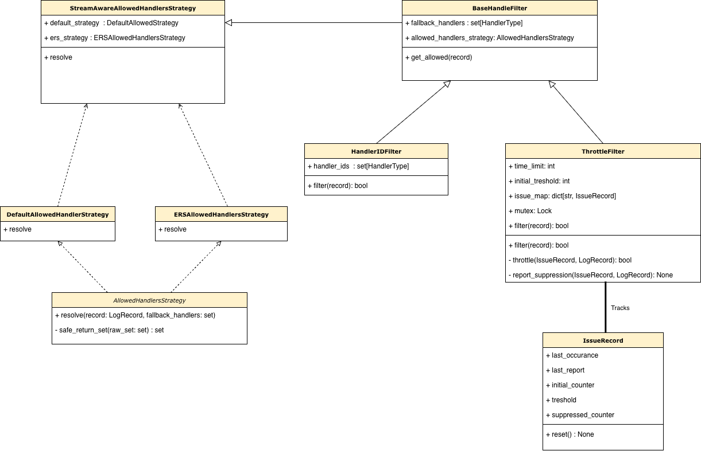
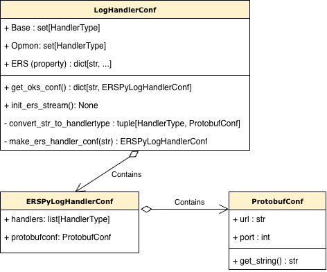

Concepts: How the logging system works internally
This page is for developers who want to understand the internals of daqpytools logging — for example, to add a new handler or debug a routing issue.
For user-facing concepts (Python logging fundamentals, streams), see the user explanation. For implementation recipes, see the how-to guides.
The core idea
In the context of controlling which records to transmit, the logging system's job is to answer one question for every log record:
Should this specific handler transmit this specific record right now?
Everything (registries, strategies, filters, specs) exists to answer that question consistently and without hardcoding destination logic into handler classes.
General framework
The overall framework is as follows:
- Handlers only know how to emit (file, terminal, kafka). They don't know if they should.
- Records carry metadata about where they want to go (in
extra["handlers"]). - Filters (with their strategy) decide eligibility using that metadata + fallback rules.
This creates a few nice properties:
- You can change routing per-message without touching config or logger setup.
- Global defaults stay consistent even when metadata isn't present.
- New handlers/filters can be added without rewriting decision logic in existing code.
A model for how handlers and messages interact
Think of it as two sets that need to overlap:
- Handler capability set: "I'm a RichHandler, so I can handle RichHandler messages" (represented as
HandlerTypevalues) - Record request set: "This record wants to go to [Rich, File, Throttle]" (resolved from metadata or defaults)
A handler emits if these overlap:
The above is the general idea of how everything should work. The code is therefore there to ensure that the above model works as expected.
Core components
This section defines the core components without diving into their interactions yet. For how they interact at runtime, see the architecture reference.
HandlerTypes
HandlerType is an enum defined in handlerconf.py. It represents anything that can be attached to a logger at the top level. This includes:
- Output handlers:
Rich,File,Lstdout,Lstderr,Protobufstream,Stream(which is a composite of stdout/stderr) - Logger-level filters:
Throttle(logger-attached throttling filter)
Important: HandleIDFilter is not a HandlerType. It's an internal filter attached to each handler to enforce routing decisions.
Every HandlerType is a contract. When you use it:
- It's defined as an enum value in
handlerconf.py - It has a corresponding
HandlerSpecorFilterSpecin a registry - Records can request it via
extra={"handlers": [HandlerType.Rich, ...]} - Handlers are identified by their
HandlerTypewhen filtering decides whether to emit
When adding a new handler, pick a HandlerType first. Everything else flows from that token.
StreamType
StreamType is another enum in handlerconf.py. It marks which logical stream a record belongs to:
BASE(normal/default routing)OPMON(monitoring/opmon-related output)ERS(Error Reporting System routing)
By default, records route according to extra["handlers"] or fallback. But if a record is marked extra={"stream": StreamType.ERS}, then StreamAwareAllowedHandlersStrategy dispatches to ERS-specific routing logic instead.
This is extensible: you can add new StreamType values and teach the strategy dispatcher how to handle them.
Specs
Defined in specs.py, there are two types:
HandlerSpec describes how to build a handler:
-
alias: TheHandlerTypekey -
handler_class: The runtime handler class (used to detect existing instances) -
factory: A callable that builds the handler from configuration -
fallback_types: WhichHandlerTypevalues this handler represents for routing purposes -
target_stream: Optional (for stream-specific handlers like stdout vs stderr)
FilterSpec describes how to build a logger-level filter:
-
alias: The activationHandlerTypetoken -
filter_class: The runtime filter class -
factory: A callable that builds the filter -
fallback_types: Default handler types for the filter
Specs are the "source of truth" for what a handler or filter is. When setup code needs to build something, it looks up the spec in a registry.

HandleIDFilter

HandleIDFilter is the core enforcement mechanism. Each handler gets one attached to it.
Its job: "Should this specific handler emit this record?"
How it works:
- It knows which handler it's attached to via
handler_ids(a set ofHandlerTypevalues) - For each record, it calls the routing strategy to get the
allowed_handlersset (resolved fromextra["handlers"]or fallback) - It emits if
handler_ids ∩ allowed_handlersis non-empty
This implements the set intersection logic from the core idea section. It's the enforcement point where the handler capability set meets the record request set.
Routing strategies
Defined in routing.py, strategies answer: "What HandlerType values are allowed for this record?"
AllowedHandlersStrategy is the abstract base. Implementations:
DefaultAllowedHandlerStrategy:
- Uses
record.handlersif present (explicit routing metadata) - Falls back to
fallback_handlersset ifrecord.handlersis absent or None
ERSAllowedHandlersStrategy:
- Reads
record.ers_handlersdict andrecord.levelno(Python log level) - Maps the level to an ERS severity variable using
level_to_ers_var - Returns the handler set for that severity
StreamAwareAllowedHandlersStrategy:
- Looks at
record.stream - If
stream == StreamType.ERS, usesERSAllowedHandlersStrategy - Otherwise uses
DefaultAllowedHandlerStrategy - This is the primary strategy used by default
The key insight: strategies are pluggable. Different record types can use different resolution logic without changing filter code.
Fallback handlers
This is the number-one misunderstanding. Fallback is not a "if all else fails" mechanism. It's the default routing policy.
Each handler gets a fallback_types set from its HandlerSpec (what it defaults to emitting). When you attach a handler, you can override this with fallback_handler parameter. Here's how it works in practice:
# Start with a clean logger (no handlers)
from daqpytools.logging import add_handler, HandlerType, get_daq_logger
log = get_daq_logger(
"myapp",
log_level="INFO",
rich_handler=False, # deliberately don't add handlers, we'll do it manually
stream_handlers=False,
)
# Attach Rich handler with its spec's default fallback (Rich)
add_handler(log, HandlerType.Rich, use_parent_handlers=True)
# Rich handler's fallback now = [HandlerType.Rich] (from spec)
# Record 1: no explicit handlers → uses fallback
log.info("Rich only") # Emits because Rich is in Rich's fallback
# Attach Lstderr with fallback = Unknown (won't emit by default)
add_handler(
log,
HandlerType.Lstderr,
use_parent_handlers=True,
fallback_handler={HandlerType.Unknown} # Override! Now Lstderr won't emit unless explicitly requested
)
# Record 2: standard message → only Rich emits
log.critical("Still just rich") # Lstderr drops it (Unknown not in allowed set)
# Record 3: explicit request → both emit
log.critical("Both now", extra={"handlers": [HandlerType.Rich, HandlerType.Stream]})
The key insight: each handler has its own fallback set, set when the handler is attached. Records check against that fallback (via HandleIDFilter) unless extra["handlers"] overrides it.
This feature is incredibly useful in suppressing ERS related handlers when they are not requested for.
If routing isn't what you expect, debug:
- Does the record have explicit
extra["handlers"]? - If not, what's the fallback set?
For a more concrete logical flow of the entire thing, with examples, please see the architecture.
How HandleIDFillters, the routing strategies, and the fallback handlers work together
Handler and Filter Registries
The registries live in handlers.py and filters.py:
HANDLER_SPEC_REGISTRY: Dictionary mappingHandlerType→HandlerSpecFILTER_SPEC_REGISTRY: Dictionary mappingHandlerType→FilterSpec
These are the "catalog" of all available handler and filter types. When add_handler(log, HandlerType.Rich) is called, setup code:
- Looks up
HandlerType.RichinHANDLER_SPEC_REGISTRY(FILTER_SPEC_REGISTRYfor filters) - Calls the factory function to build the handler
- Attaches the
HandleIDFilterwith the handler'sfallback_types - Installs it on the logger
Registries prevent duplicate handlers and centralize construction logic.
LogHandlerConf
Defined in handlerconf.py, this dataclass holds the various streams and their handler configurations.
Key attributes:
BASE_CONFIG: Default handlers for normal (non-ERS, non-OPMON) loggingOPMON_CONFIG: Handlers for OPMON-related outputERS: ERS severity-specific configurations (loaded from environment variables)
LogHandlerConf also defines StreamType and parses ERS environment variables:
DUNEDAQ_ERS_ERROR="throttle,lstdout,protobufstream(monkafka.cern.ch:30092)"
DUNEDAQ_ERS_WARNING="..."
# etc.
These are parsed into ERSPyLogHandlerConf objects that hold the handler list and optional protobuf endpoint for each severity.
